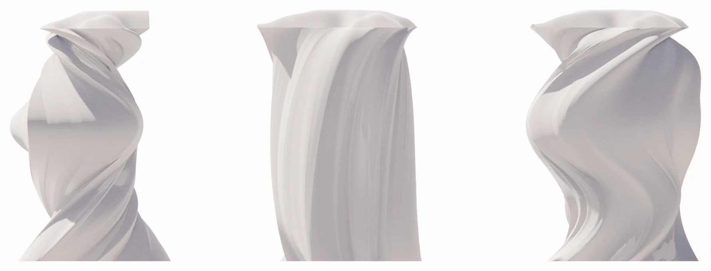
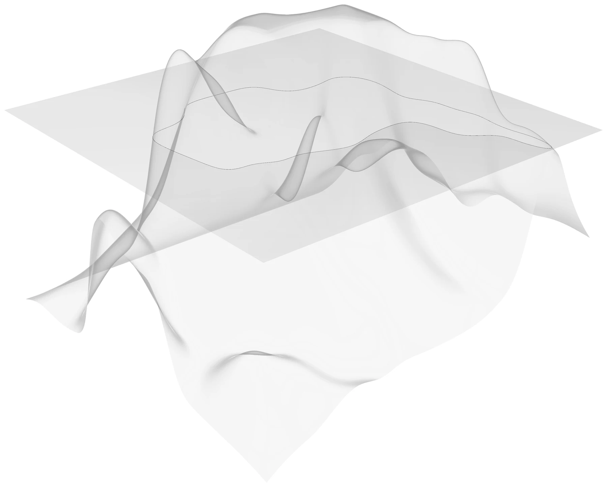
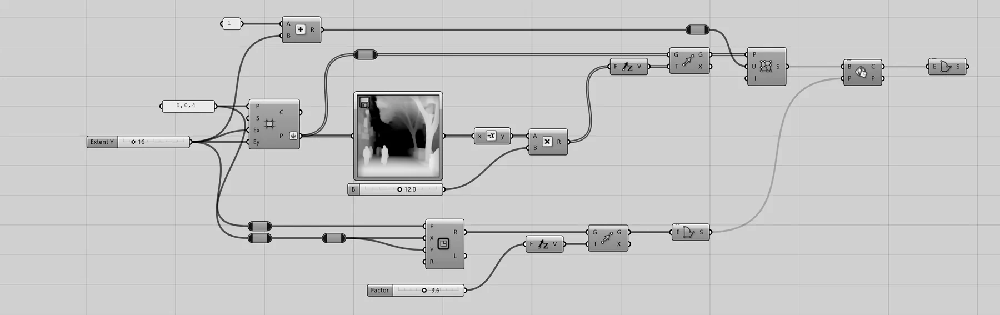

Less Siteless
2026Traffic, solar, and pedestrian attraction in Suseong-gu, Daegu driven into the form itself through multi-objective optimization.
- Type
- Graduate design studio — midterm
- Role
- Group project
- Tools
- Grasshopper · Wallacei X · Ladybug · YOLO v.7 · Flux.1-dev LoRA · ComfyUI · Python · 3D printing
- Status
- Completed — carried into Artificial Context

The intent is to create form that is “less siteless” — i.e. contains context within the form. Site imagery of Suseong-gu, Daegu was gathered and used to train a Low-Rank Adaptation model on Flux.1-dev in ComfyUI; the generated images were then rated against three categories — technology, education, and quality of life — which returned an overwhelming 91.97% weighting toward quality of life.


Vehicle movement was extracted from CCTV screen recordings with a Python capture script and processed through YOLO v.7, converted to tabular data for analysis. Solar exposure was quantified in Ladybug against the matching time bands, and pedestrian attraction was modelled as agents spawning by street and program category. Those readings became the input parameters for a Wallacei X optimization — image selector, rotation, and point picker against distance and displacement — which selected the lofted form with the least displacement at each floor. The form was resolved into concrete structure, floor plates and a circulation core, with a facade generated by pouring liquid over the lofted geometry, and carried to plans, sections, and elevation.
